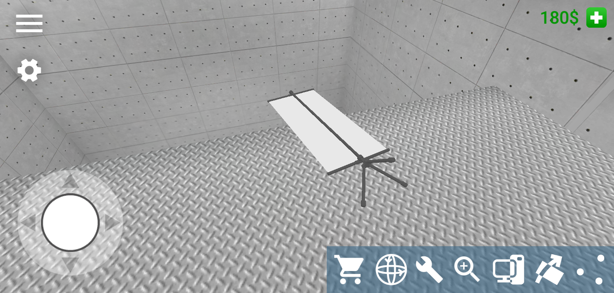
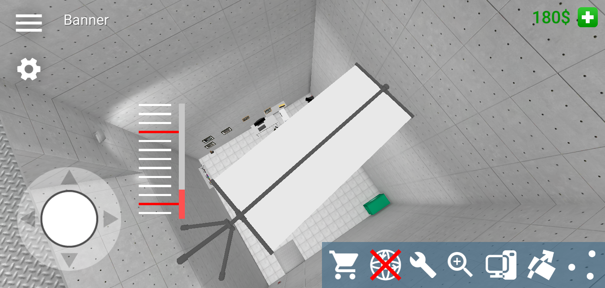
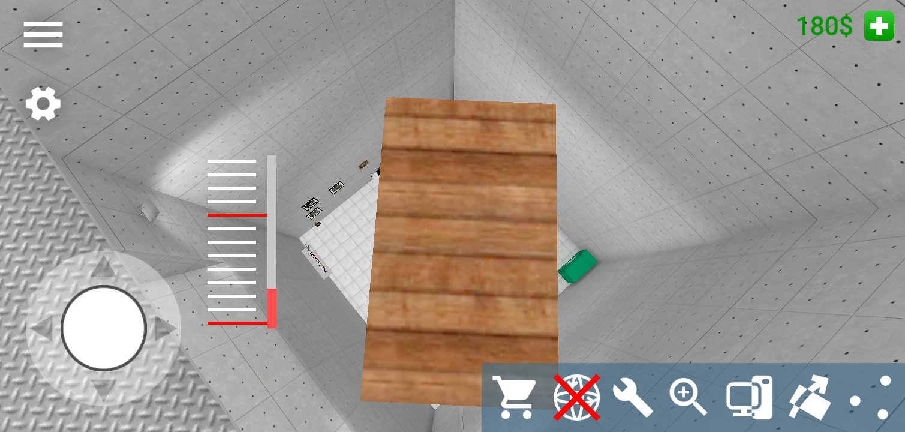
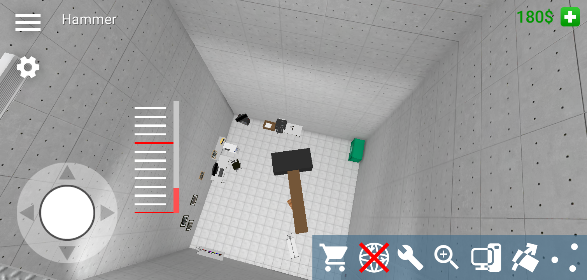
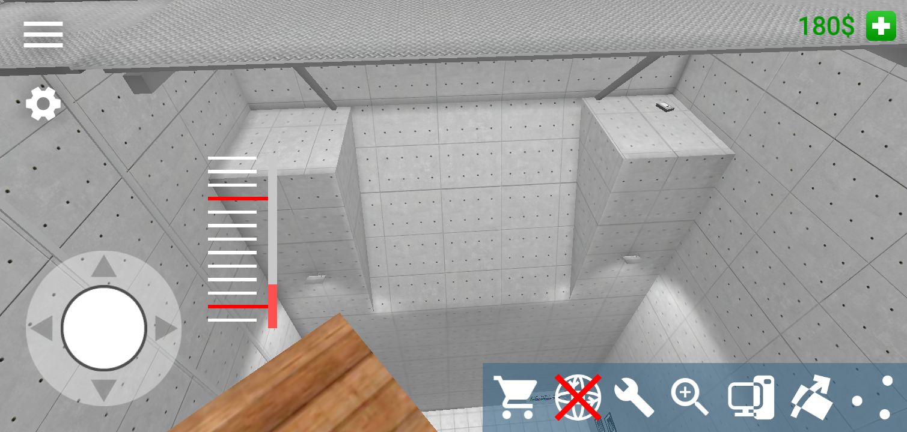
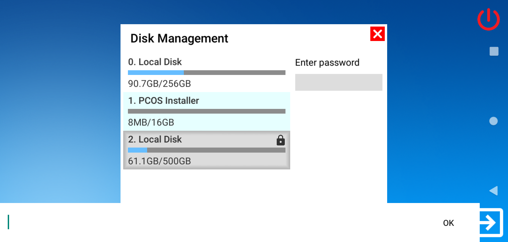
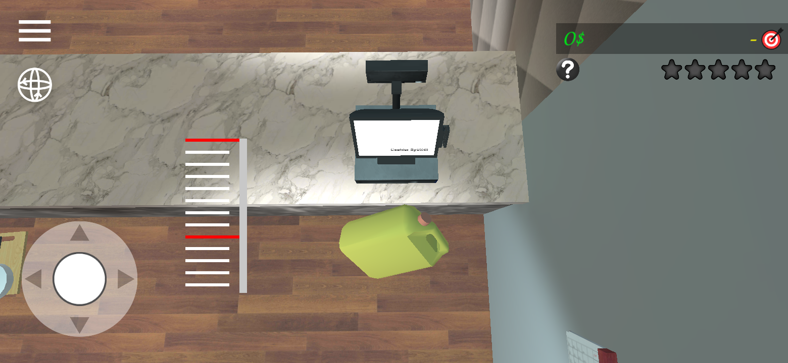

PC Simulator 'magic carpet' trick
December 23, 2024
Here is a little something I found out when I was experimenting with physics in a mobile game called PC Simulator. Items do not fall when being held.
This is important as the trick requires you to hold on to an item for it to stay in the air. The other helpful thing is the Lock Rotation button.
In this example I'll be using the Factory room setting as that is where I found the glitch and where it is useful at.
How I found it
 I took one of the portait art banners with me to the top level and laid it down, and went on it like a plank. It surprisingly let me glide across and I went to take a screenshot, and then starting falling.
The platforms also needs to be held for it to hold the player, I wonder if other Unity games run by this.
Walk, hold, and you're off. The platform can hold you as long as you are holding it. The gravity switcher thing can control how fast or slow you want to go, with control on to go up or down.
It works exceptionally well with the planks from wooden boxes. It can even work with small objects.
 Secret HDD in 8.0's Example
Not really secret but still. When I found this out, it made the platforms beneath the big platform accessible. (i did not explain it that great so here it is)
 In the example room for 8.0, there is a locked HDD that can be found. I'll probably use a save editor or something to tinker around with it, and since I'm talking about Yiming's game physics...
Restaurant Worker Simulator's counter fail
Yup, fail. What happened was that I saw that the trick also worked in this game and I wanted to see if it would get me out of the kitchen area. Unfortunately there is an invisible wall so that plan isn't happening without another thing.
Happy Holidays and Great Gravity!
PC Simulator: Google Play App Store
Restaurant Worker Simulator: Google Play App Store